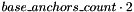
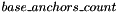
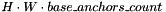

NOTES:
- Starting with the 2019 R1 release, the Model Optimizer supports the
--keep_shape_ops command line parameter that allows you to convert the TensorFlow* Object Detection API Faster and Mask RCNNs topologies so they can be re-shaped in the Inference Engine using dedicated reshape API. Refer to Using Shape Inference for more information on how to use this feature. It is possible to change the both spatial dimensions of the input image and batch size.
- Starting with the 2018 R4 release, the Model Optimizer supports the
--input_shape command line parameter for the TensorFlow* Object Detection API topologies. Refer to the Custom Input Shape for more information.
- To generate IRs for SSD topologies, the Model Optimizer creates a number of
PriorBoxClustered layers instead of a constant node with prior boxes calculated for the particular input image size. This change allows you to reshape the topology in the Inference Engine using dedicated Inference Engine API. The reshaping is supported for all SSD topologies except FPNs which contain hardcoded shapes for some operations preventing from changing topology input shape.
How to Convert a Model
With 2018 R3 release, the Model Optimizer introduces a new approach to convert models created using the TensorFlow* Object Detection API. Compared with the previous approach, the new process produces inference results with higher accuracy and does not require modifying any configuration files and providing intricate command line parameters.
You can download TensorFlow* Object Detection API models from the Object Detection Model Zoo.
NOTE: Before converting, make sure you have configured the Model Optimizer. For configuration steps, refer to Configuring the Model Optimizer.
To convert a TensorFlow* Object Detection API model, go to the <INSTALL_DIR>/deployment_tools/model_optimizer directory and run the mo_tf.py script with the following required parameters:
--input_model <path_to_frozen.pb> — File with a pre-trained model (binary or text .pb file after freezing)--tensorflow_use_custom_operations_config <path_to_subgraph_replacement_configuration_file.json> — A subgraph replacement configuration file that describes rules to convert specific TensorFlow* topologies. For the models downloaded from the TensorFlow* Object Detection API zoo, you can find the configuration files in the <INSTALL_DIR>/deployment_tools/model_optimizer/extensions/front/tf directory. Use:
ssd_v2_support.json — for frozen SSD topologies from the models zoofaster_rcnn_support.json — for frozen Faster R-CNN topologies from the models zoofaster_rcnn_support_api_v1.7.json — for Faster R-CNN topologies trained manually using the TensorFlow* Object Detection API version 1.7.0 or higherfaster_rcnn_support_api_v1.10.json — for Faster R-CNN topologies trained manually using the TensorFlow* Object Detection API version 1.7.0 or highermask_rcnn_support.json — for frozen Mask R-CNN topologies from the models zoomask_rcnn_support_api_v1.7.json — for Mask R-CNN topologies trained manually using the TensorFlow* Object Detection API version 1.7.0 or higher up to 1.9.0 inclusivelymask_rcnn_support_api_v1.11.json — for Mask R-CNN topologies trained manually using the TensorFlow* Object Detection API version 1.10.0 or higherrfcn_support.json — for the frozen RFCN topology from the models zoo frozen with TensorFlow* version 1.9.0 or lower.rfcn_support_api_v1.10.json — for the frozen RFCN topology from the models zoo frozen with TensorFlow* version 1.10.0 or higher.
--tensorflow_object_detection_api_pipeline_config <path_to_pipeline.config> — A special configuration file that describes the topology hyper-parameters and structure of the TensorFlow Object Detection API model. For the models downloaded from the TensorFlow* Object Detection API zoo, the configuration file is named pipeline.config. If you plan to train a model yourself, you can find templates for these files in the models repository.--input_shape (optional) — A custom input image shape. Refer to Custom Input Shape for more information how the --input_shape parameter is handled for the TensorFlow* Object Detection API models.
NOTE: If you convert a TensorFlow* Object Detection API model to use with the Inference Engine sample applications, you must specify the --reverse_input_channels parameter also.
Additionally to the mandatory parameters listed above you can use optional conversion parameters if needed. A full list of parameters is available in the Converting a TensorFlow* Model topic.
For example, if you downloaded the pre-trained SSD InceptionV2 topology and extracted archive to the directory /tmp/ssd_inception_v2_coco_2018_01_28, the sample command line to convert the model looks as follows:
<INSTALL_DIR>/deployment_tools/model_optimizer/mo_tf.py --input_model=/tmp/ssd_inception_v2_coco_2018_01_28/frozen_inference_graph.pb --tensorflow_use_custom_operations_config <INSTALL_DIR>/deployment_tools/model_optimizer/extensions/front/tf/ssd_v2_support.json --tensorflow_object_detection_api_pipeline_config /tmp/ssd_inception_v2_coco_2018_01_28/pipeline.config --reverse_input_channels
Custom Input Shape
Model Optimizer handles command line parameter --input_shape for TensorFlow* Object Detection API models in a special way depending on the image resizer type defined in the pipeline.config file. TensorFlow* Object Detection API generates different Preprocessor sub-graph based on the image resizer type. Model Optimizer supports two types of image resizer:
fixed_shape_resizer — Stretches input image to the specific height and width. The pipeline.config snippet below shows a fixed_shape_resizer sample definition: image_resizer {
fixed_shape_resizer {
height: 300
width: 300
}
}
keep_aspect_ratio_resizer — Resizes the input image keeping aspect ratio to satisfy the minimum and maximum size constraints. The pipeline.config snippet below shows a keep_aspect_ratio_resizer sample definition: image_resizer {
keep_aspect_ratio_resizer {
min_dimension: 600
max_dimension: 1024
}
}
Fixed Shape Resizer Replacement
- If the
--input_shape command line parameter is not specified, the Model Optimizer generates an input layer with the height and width as defined in the pipeline.config.
- If the
--input_shape [1, H, W, 3] command line parameter is specified, the Model Optimizer sets the input layer height to H and width to W and convert the model. However, the conversion may fail because of the following reasons:
- The model is not reshape-able, meaning that it's not possible to change the size of the model input image. For example, SSD FPN models have
Reshape operations with hard-coded output shapes, but the input size to these Reshape instances depends on the input image size. In this case, the Model Optimizer shows an error during the shape inference phase. Run the Model Optimizer with --log_level DEBUG to see the inferred layers output shapes to see the mismatch.
- Custom input shape is too small. For example, if you specify
--input_shape [1,100,100,3] to convert a SSD Inception V2 model, one of convolution or pooling nodes decreases input tensor spatial dimensions to non-positive values. In this case, the Model Optimizer shows error message like this: '[ ERROR ] Shape [ 1 -1 -1 256] is not fully defined for output X of "node_name".'
Keep Aspect Ratio Resizer Replacement
- If the
--input_shape command line parameter is not specified, the Model Optimizer generates an input layer with both height and width equal to the value of parameter min_dimension in the keep_aspect_ratio_resizer.
- If the
--input_shape [1, H, W, 3] command line parameter is specified, the Model Optimizer scales the specified input image height H and width W to satisfy the min_dimension and max_dimension constraints defined in the keep_aspect_ratio_resizer. The following function calculates the input layer height and width:
def calculate_shape_keeping_aspect_ratio(H: int, W: int, min_dimension: int, max_dimension: int):
ratio_min = min_dimension / min(H, W)
ratio_max = max_dimension / max(H, W)
ratio = min(ratio_min, ratio_max)
return int(round(H * ratio)), int(round(W * ratio))
Models with keep_aspect_ratio_resizer were trained to recognize object in real aspect ratio, in contrast with most of the classification topologies trained to recognize objects stretched vertically and horizontally as well. By default, the Model Optimizer converts topologies with keep_aspect_ratio_resizer to consume a square input image. If the non-square image is provided as input, it is stretched without keeping aspect ratio that results to objects detection quality decrease.
NOTE: It is highly recommended to specify the --input_shape command line parameter for the models with keep_aspect_ratio_resizer if the input image dimensions are known in advance.
Important Notes About Feeding Input Images to the Samples
Inference Engine comes with a number of samples that use Object Detection API models including:
There are a number of important notes about feeding input images to the samples:
- Inference Engine samples stretch input image to the size of the input layer without preserving aspect ratio. This behavior is usually correct for most topologies (including SSDs), but incorrect for the following Faster R-CNN topologies: Inception ResNet, Inception V2, ResNet50 and ResNet101. Images pre-processing for these topologies keeps aspect ratio. Also all Mask R-CNN and R-FCN topologies require keeping aspect ratio. The type of pre-processing is defined in the pipeline configuration file in the section
image_resizer. If keeping aspect ratio is required, then it is necessary to resize image before passing it to the sample.
- TensorFlow* implementation of image resize may be different from the one implemented in the sample. Even reading input image from compressed format (like
.jpg) could give different results in the sample and TensorFlow*. So, if it is necessary to compare accuracy between the TensorFlow* and the Inference Engine it is recommended to pass pre-scaled input image in a non-compressed format (like .bmp).
- If you want to infer the model with the Inference Engine samples, convert the model specifying the
--reverse_input_channels command line parameter. The samples load images in BGR channels order, while TensorFlow* models were trained with images in RGB order. When the --reverse_input_channels command line parameter is specified, the Model Optimizer performs first convolution or other channel dependent operation weights modification so the output will be like the image is passed with RGB channels order.
Detailed Explanations of Model Conversion Process
This section is intended for users who want to understand how the Model Optimizer performs Object Detection API models conversion in details. The knowledge given in this section is also useful for users having complex models that are not converted with the Model Optimizer out of the box. It is highly recommended to read Sub-Graph Replacement in Model Optimizer chapter first to understand sub-graph replacement concepts which are used here.
Implementation of the sub-graph replacers for Object Detection API models is located in the file <INSTALL_DIR>/deployment_tools/model_optimizer/extensions/front/tf/ObjectDetectionAPI.py.
It is also important to open the model in the TensorBoard to see the topology structure. Model Optimizer can create an event file that can be then fed to the TensorBoard* tool. Run the Model Optimizer with providing two command line parameters:
--input_model <path_to_frozen.pb> — Path to the frozen model--tensorboard_logdir — Path to the directory where TensorBoard looks for the event files.
SSD (Single Shot Multibox Detector) Topologies
The SSD topologies are the simplest ones among Object Detection API topologies, so they will be analyzed first. The sub-graph replacement configuration file ssd_v2_support.json, which should be used to convert these models, contains three sub-graph replacements: ObjectDetectionAPIPreprocessorReplacement, ObjectDetectionAPISSDPostprocessorReplacement and ObjectDetectionAPIOutputReplacement. Their implementation is described below.
Preprocessor Block
All Object Detection API topologies contain Preprocessor block of nodes (aka "scope") that performs two tasks:
- Scales image to the size required by the topology.
- Applies mean and scale values if needed.
Model Optimizer cannot convert the part of the Preprocessor block performing scaling because the TensorFlow implementation uses while- loops which the Inference Engine does not support. Another reason is that the Inference Engine samples scale input images to the size of the input layer from the Intermediate Representation (IR) automatically. Given that it is necessary to cut-off the scaling part of the Preprocessor block and leave only operations applying mean and scale values. This task is solved using the Model Optimizer sub-graph replacer mechanism.
The Preprocessor block has two outputs: the tensor with pre-processed image(s) data and a tensor with pre-processed image(s) size(s). While converting the model, Model Optimizer keeps only the nodes producing the first tensor. The second tensor is a constant which can be obtained from the pipeline.config file to be used in other replacers.
The implementation of the Preprocessor block sub-graph replacer is the following (file <INSTALL_DIR>/deployment_tools/model_optimizer/extensions/front/tf/ObjectDetectionAPI.py):
class ObjectDetectionAPIPreprocessorReplacement(FrontReplacementFromConfigFileSubGraph):
"""
The class replaces the "Preprocessor" block resizing input image and applying mean/scale values. Only nodes related
to applying mean/scaling values are kept.
"""
replacement_id = 'ObjectDetectionAPIPreprocessorReplacement'
def run_before(self):
return [Pack, Sub]
def nodes_to_remove(self, graph: Graph, match: SubgraphMatch):
new_nodes_to_remove = match.matched_nodes_names()
# do not remove nodes that perform input image scaling and mean value subtraction
for node_to_keep in ('Preprocessor/sub', 'Preprocessor/sub/y', 'Preprocessor/mul', 'Preprocessor/mul/x'):
if node_to_keep in new_nodes_to_remove:
new_nodes_to_remove.remove(node_to_keep)
return new_nodes_to_remove
def generate_sub_graph(self, graph: Graph, match: SubgraphMatch):
argv = graph.graph['cmd_params']
layout = graph.graph['layout']
if argv.tensorflow_object_detection_api_pipeline_config is None:
raise Error(missing_param_error)
pipeline_config = PipelineConfig(argv.tensorflow_object_detection_api_pipeline_config)
sub_node = match.output_node(0)[0]
if not sub_node.has('op') or sub_node.op != 'Sub':
raise Error('The output op of the Preprocessor sub-graph is not of type "Sub". Looks like the topology is '
'not created with TensorFlow Object Detection API.')
mul_node = None
if sub_node.in_node(0).has('op') and sub_node.in_node(0).op == 'Mul':
log.info('There is image scaling node in the Preprocessor block.')
mul_node = sub_node.in_node(0)
initial_input_node_name = 'image_tensor'
if initial_input_node_name not in graph.nodes():
raise Error('Input node "{}" of the graph is not found. Do not run the Model Optimizer with '
'"--input" command line parameter.'.format(initial_input_node_name))
placeholder_node = Node(graph, initial_input_node_name)
# set default value of the batch size to 1 if user didn't specify batch size and input shape
batch_dim = get_batch_dim(layout, 4)
if argv.batch is None and placeholder_node.shape[batch_dim] == -1:
placeholder_node.shape[batch_dim] = 1
if placeholder_node.shape[batch_dim] > 1:
print("[ WARNING ] The batch size more than 1 is supported for SSD topologies only.")
height, width = calculate_placeholder_spatial_shape(graph, match, pipeline_config)
placeholder_node.shape[get_height_dim(layout, 4)] = height
placeholder_node.shape[get_width_dim(layout, 4)] = width
# save the pre-processed image spatial sizes to be used in the other replacers
graph.graph['preprocessed_image_height'] = placeholder_node.shape[get_height_dim(layout, 4)]
graph.graph['preprocessed_image_width'] = placeholder_node.shape[get_width_dim(layout, 4)]
to_float_node = placeholder_node.out_node(0)
if not to_float_node.has('op') or to_float_node.op != 'Cast':
raise Error('The output of the node "{}" is not Cast operation. Cannot apply replacer.'.format(
initial_input_node_name))
# connect to_float_node directly with node performing scale on mean value subtraction
if mul_node is None:
create_edge(to_float_node, sub_node, 0, 0)
else:
create_edge(to_float_node, mul_node, 0, 1)
print('The Preprocessor block has been removed. Only nodes performing mean value subtraction and scaling (if'
' applicable) are kept.')
return {}
The run_before function defines a list of replacers which current replacer should be run before. In this case it is Pack and Sub. The Sub operation is not supported by Inference Engine plugins so Model Optimizer replaces it with a combination of the Eltwise layer (element-wise sum) and the ScaleShift layer. But the Preprocessor replacer expects to see Sub node, so it should be called before the Sub is replaced.
The nodes_to_remove function returns list of nodes that should be removed after the replacement happens. In this case it removes all nodes matched in the Preprocessor scope except the Sub and Mul nodes performing mean value subtraction and scaling.
The generate_sub_graph function performs the following actions:
- Lines 20-24: Reads the
pipeline.config configuration file to get the model hyper-parameters and other attributes.
- Lines 25-29: Checks that the output node of the
Preprocessor scope is of type Sub.
- Lines 31-34: Checks that the input of the
Sub node is of type Mul. This information is needed to correctly connect the input node of the topology later.
- Lines 36-50: Finds the topology input (placeholder) node and sets its weight and height according to the image resizer defined in the
pipeline.config file and the --input_shape provided by the user. The batch size is set to 1 by default, but it will be overridden if you specify a batch size using command-line option -b. Refer to the Custom Input Shape on how the Model Optimizer calculates input layer height and width.
- Lines 52-54: Saves the placeholder shape in the
graph object for other sub-graph replacements.
- Lines 56-59: Checks that the placeholder node follows the 'Cast' node which converts model input data from UINT8 to FP32.
- Lines 61-65: Creates edge from the placeholder node to the
Mul (if present) or Sub node to a correct input port (0 for Sub and 1 for Mul).
- Line 69: The replacer returns a dictionary with nodes mapping that is used by other sub-graph replacement functions. In this case, it is not needed, so the empty dictionary is returned.
Postprocessor Block
A distinct feature of any SSD topology is a part performing non-maximum suppression of proposed images bounding boxes. This part of the topology is implemented with dozens of primitive operations in TensorFlow, while in Inference Engine, it is one layer called DetectionOutput. Thus, to convert a SSD model from the TensorFlow, the Model Optimizer should replace the entire sub-graph of operations that implement the DetectionOutput layer with a single DetectionOutput node.
The Inference Engine DetectionOutput layer implementation consumes three tensors in the following order:
- Tensor with locations of bounding boxes
- Tensor with confidences for each bounding box
- Tensor with prior boxes ("anchors" in a TensorFlow terminology)
The Inference Engine DetectionOutput layer implementation produces one tensor with seven numbers for each actual detection:
- batch index
- class label
- class probability
- x_1 box coordinate
- y_1 box coordinate
- x_2 box coordinate
- y_2 box coordinate.
There are more output tensors in the TensorFlow Object Detection API: "detection_boxes", "detection_classes", "detection_scores" and "num_detections", but the values in them are consistent with the output values of the Inference Engine DetectionOutput layer.
The sub-graph replacement by points is used in the ssd_v2_support.json to match the Postprocessor block. The start points are defined the following way:
- "Postprocessor/Shape" receives tensor with bounding boxes;
- "Postprocessor/scale_logits" receives tensor with confidences(probabilities) for each box;
- "Postprocessor/Tile" receives tensor with prior boxes (anchors);
- "Postprocessor/Reshape_1" is specified only to match the whole
Postprocessor scope. Not used in the replacement code;
- "Postprocessor/ToFloat" is specified only to match the whole
Postprocessor scope. Not used in the replacement code.
There are a number of differences in layout, format and content of in input tensors to DetectionOutput layer and what tensors generates TensorFlow, so additional tensors processing before creating DetectionOutput layer is required. It is described below. The sub-graph replacement class for the DetectionOutput layer is given below:
class ObjectDetectionAPISSDPostprocessorReplacement(FrontReplacementFromConfigFileSubGraph):
replacement_id = 'ObjectDetectionAPISSDPostprocessorReplacement'
def run_after(self):
return [ObjectDetectionAPIPreprocessorReplacement]
def run_before(self):
# the replacer uses node of type "RealDiv" as one of the start points, but Model Optimizer replaces nodes of
# type "RealDiv" with a new ones, so it is necessary to replace the sub-graph before replacing the "RealDiv"
# nodes
return [Div, StandaloneConstEraser]
def output_edges_match(self, graph: Graph, match: SubgraphMatch, new_sub_graph: dict):
# the DetectionOutput in IE produces single tensor, but in TF it produces two tensors, so create only one output
# edge match
return {match.output_node(0)[0].id: new_sub_graph['detection_output_node'].id}
def generate_sub_graph(self, graph: Graph, match: SubgraphMatch):
argv = graph.graph['cmd_params']
if argv.tensorflow_object_detection_api_pipeline_config is None:
raise Error(missing_param_error)
pipeline_config = PipelineConfig(argv.tensorflow_object_detection_api_pipeline_config)
num_classes = _value_or_raise(match, pipeline_config, 'num_classes')
# reshapes confidences to 4D before applying activation function
expand_dims_op = Reshape(graph, {'dim': int64_array([0, 1, -1, num_classes + 1])})
# do not convert from NHWC to NCHW this node shape
expand_dims_node = expand_dims_op.create_node([match.input_nodes(1)[0][0].in_node(0)],
dict(name='do_ExpandDims_conf'))
activation_function = _value_or_raise(match, pipeline_config, 'postprocessing_score_converter')
activation_conf_node = add_activation_function_after_node(graph, expand_dims_node, activation_function)
PermuteAttrs.set_permutation(expand_dims_node, expand_dims_node.out_node(), None)
# IE DetectionOutput layer consumes flattened tensors
# reshape operation to flatten locations tensor
reshape_loc_op = Reshape(graph, {'dim': int64_array([0, -1])})
reshape_loc_node = reshape_loc_op.create_node([match.input_nodes(0)[0][0].in_node(0)],
dict(name='do_reshape_loc'))
# IE DetectionOutput layer consumes flattened tensors
# reshape operation to flatten confidence tensor
reshape_conf_op = Reshape(graph, {'dim': int64_array([0, -1])})
reshape_conf_node = reshape_conf_op.create_node([activation_conf_node], dict(name='do_reshape_conf'))
if pipeline_config.get_param('ssd_anchor_generator_num_layers') is not None or \
pipeline_config.get_param('multiscale_anchor_generator_min_level') is not None:
# change the Reshape operations with hardcoded number of output elements of the convolution nodes to be
# reshapable
_relax_reshape_nodes(graph, pipeline_config)
# create PriorBoxClustered nodes instead of a constant value with prior boxes so the model could be reshaped
if pipeline_config.get_param('ssd_anchor_generator_num_layers') is not None:
priors_node = _create_prior_boxes_node(graph, pipeline_config)
elif pipeline_config.get_param('multiscale_anchor_generator_min_level') is not None:
priors_node = _create_multiscale_prior_boxes_node(graph, pipeline_config)
else:
log.info('The anchor generator is not known. Save constant with prior-boxes to IR.')
priors_node = match.input_nodes(2)[0][0].in_node(0)
# creates DetectionOutput Node object from Op class
detection_output_op = DetectionOutput(graph, match.custom_replacement_desc.custom_attributes)
detection_output_op.attrs['old_infer'] = detection_output_op.attrs['infer']
detection_output_op.attrs['infer'] = __class__.do_infer
detection_output_node = detection_output_op.create_node(
[reshape_loc_node, reshape_conf_node, priors_node],
dict(name=detection_output_op.attrs['type'],
clip=1,
confidence_threshold=_value_or_raise(match, pipeline_config, 'postprocessing_score_threshold'),
top_k=_value_or_raise(match, pipeline_config, 'postprocessing_max_detections_per_class'),
keep_top_k=_value_or_raise(match, pipeline_config, 'postprocessing_max_total_detections'),
nms_threshold=_value_or_raise(match, pipeline_config, 'postprocessing_iou_threshold')))
return {'detection_output_node': detection_output_node}
The run_before and run_after functions define lists of replacers that this replacer should be run before and after respectively.
The input_edges_match and output_edges_match functions generate dictionaries describing how the input/output nodes matched with the replacer should be connected with new nodes generated in the generate_sub_graph function. Refer to sub-graph replacements documentation for more information.
The generate_sub_graph function performs the following actions:
- Lines 19-23: Reads the
pipeline.config configuration file to get the model hyper-parameters and other attributes.
- Lines 25-32: Makes tensor with confidences 4D and apply correct activation function (read from the
pipeline.config file) to it.
- Line 33: Disables permutation of
expand_dims_node's attributes because they are already in the NCHW layout.
- Lines 35-39: Makes tensor with bounding boxes 2D, where the first dimension corresponds to a batch size.
- Lines 49-52: Makes tensor with confidences 2D, where the first dimension corresponds to a batch size.
- Lines 41-44: Creates a node with
DetectionOutput layer with a number of layer attributes from the pipeline.config file. Also the inference function (infer attribute) is updated with a custom inference function __class__.do_infer. The latter change is described below.
- Lines 46-59: Creates several
PriorBoxClustered layers which generate prior boxes depending on the type of the grid anchor generator defined in the pipeline.config file. If the grid anchor type is not known then initialize priors_node as a node matched by the sub-graph replacement. In the latter case it is a constant node with prior boxes calculated for a particular input image shape.
- Lines 61-72: Creates
DetectionOutput layer with attributes from the pipeline.config file.
- Line 74: Returns dictionary with mapping of nodes that is used in the
input_edges_match and output_edges_match functions.
The paragraphs below explains why the inference function for the Detection Output layer is modified. Before doing that it is necessary to make acquaintance with selected high-level steps of the Model Optimize model conversion pipeline. Note, that only selected steps are required for understanding the change are mentioned:
- Model Optimizer creates calculation graph from the initial topology where each nodes corresponds to a operation from the initial model.
- Model Optimizer performs "Front replacers" (including the one being described now).
- Model Optimizer adds data nodes between operation nodes to the graph.
- Model Optimizer performs "Middle replacers".
- Model Optimizer performs "shape inference" phase. During this phase the shape of all data nodes is being calculated. Model Optimizer also calculates value for data tensors which are constant, i.e. do not depend on input. For example, tensor with prior boxes (generated with
MultipleGridAnchorGenerator or similar scopes) doesn't depend on input and is evaluated by Model Optimizer during shape inference. Model Optimizer uses inference function stored in the 'infer' attribute of operation nodes.
- Model Optimizer performs "Back replacers".
- Model Optimizer generates IR.
The do_infer function is needed to perform some adjustments to the tensor with prior boxes (anchors) that is known only after the shape inference phase and to perform additional transformations described below. This change is performed only if the tensor with prior boxes is not constant (so it is produced by PriorBoxClustered layers during inference). It is possible to make the Postprocessor block replacement as a Middle replacer (so the prior boxes tensor would be evaluated by the time the replacer is called), but in this case it will be necessary to correctly handle data nodes which are created between each pair of initially adjacent operation nodes. In order to inject required modification to the inference function of the DetectionOutput node, a new function is created to perform modifications and to call the initial inference function. The code of a new inference function is the following:
@staticmethod
def do_infer(node: Node):
prior_boxes = node.in_node(2).value
if prior_boxes is not None:
argv = node.graph.graph['cmd_params']
if argv.tensorflow_object_detection_api_pipeline_config is None:
raise Error(missing_param_error)
pipeline_config = PipelineConfig(argv.tensorflow_object_detection_api_pipeline_config)
variance = _variance_from_pipeline_config(pipeline_config)
# replicating the variance values for all prior-boxes
variances = np.tile(variance, [prior_boxes.shape[-2], 1])
# DetectionOutput Inference Engine expects the prior-boxes in the following layout: (values, variances)
prior_boxes = prior_boxes.reshape([-1, 4])
prior_boxes = np.concatenate((prior_boxes, variances), 0)
# compared to the IE's DetectionOutput, the TF keeps the prior-boxes in YXYX, need to get back to the XYXY
prior_boxes = np.concatenate((prior_boxes[:, 1:2], prior_boxes[:, 0:1],
prior_boxes[:, 3:4], prior_boxes[:, 2:3]), 1)
# adding another dimensions, as the prior-boxes are expected as 3d tensors
prior_boxes = prior_boxes.reshape((1, 2, -1))
node.in_node(2).shape = int64_array(prior_boxes.shape)
node.in_node(2).value = prior_boxes
node.old_infer(node)
# compared to the IE's DetectionOutput, the TF keeps the locations in YXYX, need to get back to the XYXY
# for last convolutions that operate the locations need to swap the X and Y for output feature weights & biases
conv_nodes = backward_bfs_for_operation(node.in_node(0), ['Conv2D'])
swap_weights_xy(conv_nodes)
squeeze_reshape_and_concat(conv_nodes)
for node_name in node.graph.nodes():
node = Node(node.graph, node_name)
if node.has_and_set('swap_xy_count') and len(node.out_nodes()) != node['swap_xy_count']:
raise Error('The weights were swapped for node "{}", but this weight was used in other nodes.'.format(
node.name))
- Lines 3-18: Updates the value of the tensor with prior boxes by appending variance values if the prior boxes are pre-calculated. Inference Engine implementation of the
DetectionOutput layer expects these values located within the tensor with bounding boxes, but in TensorFlow they are applied in different way.
- Line 23: Executes initial inference function to calculate the output shape of this node.
- Lines 26-27: Finds predecessor node of type "Conv2D" of the node with bounding boxes (which is
node.in_node(0)) and modifies convolution weights so "X" and "Y" coordinates are swapped. In TensorFlow bounding boxes are stored in the tensors in "YXYX" order, while in the Inference Engine it is "XYXY".
- Line 28: Executes function looking for
Reshape operations after the Conv2D nodes found above with 4D output and remove the dimension with index 2 which should be equal to 1. This is a workaround to make tensor 3D so its shape will not be transposed during the IR generation. The problem arises when bounding boxes predictions are reshaped from [1, 1, 1, X] to [1, X / 4, 1, 4]. The result tensor should not be transposed because after transpose it will have shape [1, 4, X / 4, 1] and the concatenation over dimension with index 2 will produce incorrect tensor. Also the function looks for Concat operations and changes the concatenation dimension from 2 to 1.
Faster R-CNN Topologies
The Faster R-CNN models contain several building blocks similar to building blocks from SSD models so it is highly recommended to read the section about converting them first. Detailed information about Faster R-CNN topologies is provided in the abstract.
Preprocessor Block
Faster R-CNN topologies contain similar Preprocessor block as SSD topologies. The same ObjectDetectionAPIPreprocessorReplacement sub-graph replacer is used to cut it off.
Proposal Layer
The Proposal layer is implemented with dozens of primitive operations in TensorFlow, meanwhile, it is a single layer in the Inference Engine. The ObjectDetectionAPIProposalReplacement sub-graph replacer identifies nodes corresponding to the layer and replaces them with required new nodes.
class ObjectDetectionAPIProposalReplacement(FrontReplacementFromConfigFileSubGraph):
"""
This class replaces sub-graph of operations with Proposal layer and additional layers transforming
tensors from layout of TensorFlow to layout required by Inference Engine.
Refer to comments inside the function for more information about performed actions.
"""
replacement_id = 'ObjectDetectionAPIProposalReplacement'
def run_after(self):
return [ObjectDetectionAPIPreprocessorReplacement]
def run_before(self):
return [Sub, CropAndResizeReplacement]
def output_edges_match(self, graph: Graph, match: SubgraphMatch, new_sub_graph: dict):
return {match.output_node(0)[0].id: new_sub_graph['proposal_node'].id}
def nodes_to_remove(self, graph: Graph, match: SubgraphMatch):
new_list = match.matched_nodes_names().copy()
# do not remove nodes that produce box predictions and class predictions
new_list.remove(match.single_input_node(0)[0].id)
new_list.remove(match.single_input_node(1)[0].id)
return new_list
def generate_sub_graph(self, graph: Graph, match: SubgraphMatch):
argv = graph.graph['cmd_params']
if argv.tensorflow_object_detection_api_pipeline_config is None:
raise Error(missing_param_error)
pipeline_config = PipelineConfig(argv.tensorflow_object_detection_api_pipeline_config)
max_proposals = _value_or_raise(match, pipeline_config, 'first_stage_max_proposals')
proposal_ratios = _value_or_raise(match, pipeline_config, 'anchor_generator_aspect_ratios')
proposal_scales = _value_or_raise(match, pipeline_config, 'anchor_generator_scales')
anchors_count = len(proposal_ratios) * len(proposal_scales)
# Convolution/matmul node that produces classes predictions
# Permute result of the tensor with classes permissions so it will be in a correct layout for Softmax
predictions_node = backward_bfs_for_operation(match.single_input_node(1)[0], ['Add'])[0]
reshape_classes_op = Reshape(graph, dict(dim=int64_array([0, anchors_count, 2, -1])))
reshape_classes_node = reshape_classes_op.create_node([], dict(name='predictions/Reshape', nchw_layout=True))
predictions_node.insert_node_after(reshape_classes_node, 0)
softmax_conf_op = Softmax(graph, dict(axis=2, nchw_layout=True, name=reshape_classes_node.id + '/Softmax'))
softmax_conf_node = softmax_conf_op.create_node([reshape_classes_node])
permute_reshape_softmax_op = Permute(graph, dict(order=int64_array([0, 2, 1, 3]), nchw_layout=True))
permute_reshape_softmax_node = permute_reshape_softmax_op.create_node([softmax_conf_node], dict(
name=softmax_conf_node.name + '/Permute'))
initial_shape_op = Shape(graph, dict(name=predictions_node.id + '/Shape'))
initial_shape_node = initial_shape_op.create_node([predictions_node])
# implement custom reshape infer function because we need to know the input convolution node output dimension
# sizes but we can know it only after partial infer
reshape_permute_op = Reshape(graph, dict())
reshape_permute_node = reshape_permute_op.create_node([permute_reshape_softmax_node, initial_shape_node],
dict(name='Reshape_Permute_Class'))
variance_height = pipeline_config.get_param('frcnn_variance_height')
variance_width = pipeline_config.get_param('frcnn_variance_width')
variance_x = pipeline_config.get_param('frcnn_variance_x')
variance_y = pipeline_config.get_param('frcnn_variance_y')
anchor_generator_height_stride = pipeline_config.get_param('anchor_generator_height_stride')
anchor_generator_width_stride = pipeline_config.get_param('anchor_generator_width_stride')
anchor_generator_height = pipeline_config.get_param('anchor_generator_height')
anchor_generator_width = pipeline_config.get_param('anchor_generator_width')
if variance_height != variance_width:
log.error('The values for variance for height "{}" is not equal to variance for width "{}". The detection '
'results will be inaccurate.'.format(variance_height, variance_width))
if variance_x != variance_y:
log.error('The values for variance for x "{}" is not equal to variance for y "{}". The detection '
'results will be inaccurate.'.format(variance_x, variance_y))
if anchor_generator_height_stride != anchor_generator_width_stride:
log.error('The values for the anchor generator height stride "{}" is not equal to the anchor generator '
'width stride "{}". The detection results will be inaccurate.'.format(
anchor_generator_height_stride, anchor_generator_width_stride))
if anchor_generator_height != anchor_generator_width:
log.error('The values for the anchor generator height "{}" is not equal to the anchor generator width '
'stride "{}". The detection results will be inaccurate.'.format(anchor_generator_height,
anchor_generator_width))
proposal_op = ProposalOp(graph, dict(min_size=1,
framework='tensorflow',
pre_nms_topn=2 ** 31 - 1,
box_size_scale=variance_height,
box_coordinate_scale=variance_x,
post_nms_topn=max_proposals,
feat_stride=anchor_generator_height_stride,
ratio=proposal_ratios,
scale=proposal_scales,
normalize=1,
base_size=anchor_generator_height,
nms_thresh=_value_or_raise(match, pipeline_config,
'first_stage_nms_iou_threshold')))
for key in ('clip_before_nms', 'clip_after_nms'):
if key in match.custom_replacement_desc.custom_attributes:
proposal_op.attrs[key] = int(match.custom_replacement_desc.custom_attributes[key])
anchors_node = backward_bfs_for_operation(match.single_input_node(0)[0], ['Add'])[0]
# creates input to store input image height, width and scales (usually 1.0s)
# the batch size for this input is fixed because it is allowed to pass images of the same size only as input
input_op_with_image_size = Input(graph, dict(shape=int64_array([1, 3]), fixed_batch=True))
input_with_image_size_node = input_op_with_image_size.create_node([], dict(name='image_info'))
proposal_node = proposal_op.create_node([reshape_permute_node, anchors_node, input_with_image_size_node],
dict(name='proposals'))
if 'do_not_swap_proposals' in match.custom_replacement_desc.custom_attributes and \
match.custom_replacement_desc.custom_attributes['do_not_swap_proposals']:
swapped_proposals_node = proposal_node
else:
swapped_proposals_node = add_convolution_to_swap_xy_coordinates(graph, proposal_node, 5)
proposal_reshape_2d_op = Reshape(graph, dict(dim=int64_array([-1, 5]), nchw_layout=True))
proposal_reshape_2d_node = proposal_reshape_2d_op.create_node([swapped_proposals_node],
dict(name="reshape_swap_proposals_2d"))
# feed the CropAndResize node with a correct boxes information produced with the Proposal layer
# find the first CropAndResize node in the BFS order
crop_and_resize_nodes_ids = [node_id for node_id in bfs_search(graph, [match.single_input_node(0)[0].id]) if
graph.node[node_id]['op'] == 'CropAndResize']
assert len(crop_and_resize_nodes_ids) != 0, "Didn't find any CropAndResize nodes in the graph."
if 'do_not_swap_proposals' not in match.custom_replacement_desc.custom_attributes or not \
match.custom_replacement_desc.custom_attributes['do_not_swap_proposals']:
crop_and_resize_node = Node(graph, crop_and_resize_nodes_ids[0])
# set a marker that the input with box coordinates has been pre-processed so the CropAndResizeReplacement
# transform doesn't try to merge the second and the third inputs
crop_and_resize_node['inputs_preprocessed'] = True
graph.remove_edge(crop_and_resize_node.in_node(1).id, crop_and_resize_node.id)
graph.create_edge(proposal_reshape_2d_node, crop_and_resize_node, out_port=0, in_port=1)
tf_proposal_reshape_4d_op = Reshape(graph, dict(dim=int64_array([-1, 1, max_proposals, 5]), nchw_layout=True))
tf_proposal_reshape_4d_node = tf_proposal_reshape_4d_op.create_node([swapped_proposals_node],
dict(name="reshape_proposal_4d"))
crop_op = Crop(graph, dict(axis=int64_array([3]), offset=int64_array([1]), dim=int64_array([4]),
nchw_layout=True))
crop_node = crop_op.create_node([tf_proposal_reshape_4d_node], dict(name='crop_proposals'))
tf_proposals_crop_reshape_3d_op = Reshape(graph, dict(dim=int64_array([0, -1, 4]), nchw_layout=True))
tf_proposals_crop_reshape_3d_node = tf_proposals_crop_reshape_3d_op.create_node([crop_node],
dict(name="reshape_crop_3d"))
return {'proposal_node': tf_proposals_crop_reshape_3d_node}
The main interest of the implementation of this replacer is the generate_sub_graph function.
Lines 26-34: Parses the pipeline.config file and gets required parameters for the Proposal layer.
Lines 38-57: Performs the following manipulations with the tensor with class predictions. TensorFlow uses the NHWC layout, while the Inference Engine uses NCHW. Model Optimizer by default performs transformations with all nodes data in the inference graph to convert it to the NCHW layout. The size of 'C' dimension of the tensor with class predictions is equal to , where 2 corresponds to a number of classes (background and foreground) and  is equal to number of anchors that are applied to each position of 'H' and 'W' dimensions. Therefore, there are  bounding boxes. Lines 44-45 apply the Softmax layer to this tensor to get class probabilities for each bounding box.
Lines 59-81: Reads topology parameters related to variances and anchors generation.
Lines 83-108: Adds the Proposal layer to the graph. This layer has one input (generated in lines 104-105) which should be filled with three values before inference: input image height, input image width, image scale factor.
Lines 110-132: Swaps output values of the Proposal layer if the parameter do_not_swap_proposals is not set to True in the sub-graph replacement configuration file for the replacer.
Lines 134-144: Crops the output from the Proposal node to remove the batch indices (the Inference Engine implementation of the Proposal layer generates tensor with shape [num_proposals, 5]). The final tensor contains just box coordinates as in the TensorFlow implementation.
SecondStagePostprocessor Block
The SecondStagePostprocessor block is similar to the Postprocessor block from the SSDs topologies. But there are a number of differences in conversion of the SecondStagePostprocessor block.
class ObjectDetectionAPIDetectionOutputReplacement(FrontReplacementFromConfigFileSubGraph):
"""
Replaces the sub-graph that is equal to the DetectionOutput layer from Inference Engine. This replacer is used for
Faster R-CNN, R-FCN and Mask R-CNN topologies conversion.
The replacer uses a value of the custom attribute 'coordinates_swap_method' from the sub-graph replacement
configuration file to choose how to swap box coordinates of the 0-th input of the generated DetectionOutput layer.
Refer to the code for more details.
"""
replacement_id = 'ObjectDetectionAPIDetectionOutputReplacement'
def run_before(self):
return [ObjectDetectionAPIMaskRCNNROIPoolingSecondReplacement, Unpack, Sub]
def run_after(self):
return [ObjectDetectionAPIProposalReplacement, CropAndResizeReplacement]
def nodes_to_remove(self, graph: Graph, match: SubgraphMatch):
new_nodes_to_remove = match.matched_nodes_names().copy()
outputs = ['detection_boxes', 'detection_scores', 'num_detections']
for output in outputs:
children = Node(graph, output).out_nodes()
if len(children) != 1:
log.warning('Output {} has {} children. It should have only one output: with op==`OpOutput`'
''.format(output, len(children)))
elif children[list(children.keys())[0]].op == 'OpOutput':
new_nodes_to_remove.append(children[list(children.keys())[0]].id)
else:
continue
new_nodes_to_remove.extend(outputs)
return new_nodes_to_remove
def output_edges_match(self, graph: Graph, match: SubgraphMatch, new_sub_graph: dict):
# the DetectionOutput in IE produces single tensor, but in TF it produces four tensors, so we need to create
# only one output edge match
return {match.output_node(0)[0].id: new_sub_graph['detection_output_node'].id}
@staticmethod
def skip_nodes_by_condition(current_node: Node, condition: callable):
while condition(current_node):
current_node = current_node.in_node()
return current_node
def generate_sub_graph(self, graph: Graph, match: SubgraphMatch):
argv = graph.graph['cmd_params']
if argv.tensorflow_object_detection_api_pipeline_config is None:
raise Error(missing_param_error)
pipeline_config = PipelineConfig(argv.tensorflow_object_detection_api_pipeline_config)
num_classes = _value_or_raise(match, pipeline_config, 'num_classes')
max_proposals = _value_or_raise(match, pipeline_config, 'first_stage_max_proposals')
activation_function = _value_or_raise(match, pipeline_config, 'postprocessing_score_converter')
activation_conf_node = add_activation_function_after_node(graph, match.single_input_node(1)[0].in_node(0),
activation_function)
# IE DetectionOutput layer consumes flattened tensors so need add a Reshape layer.
# The batch value of the input tensor is not equal to the batch of the topology, so it is not possible to use
# "0" value in the Reshape layer attribute to refer to the batch size, but we know how to
# calculate the second dimension so the batch value will be deduced from it with help of "-1".
reshape_conf_op = Reshape(graph, dict(dim=int64_array([-1, (num_classes + 1) * max_proposals])))
reshape_conf_node = reshape_conf_op.create_node([activation_conf_node], dict(name='do_reshape_conf'))
# Workaround for PermuteForReshape pass.
# We looking for first not Reshape-typed node before match.single_input_node(0)[0].in_node(0).
# And add reshape_loc node after this first not Reshape-typed node.
current_node = self.skip_nodes_by_condition(match.single_input_node(0)[0].in_node(0),
lambda x: x['kind'] == 'op' and x.soft_get('type') == 'Reshape')
reshape_loc_op = Reshape(graph, dict(dim=int64_array([-1, num_classes, 1, 4])))
reshape_loc_node = reshape_loc_op.create_node([current_node], dict(name='reshape_loc', nchw_layout=True))
update_attrs(reshape_loc_node, 'shape_attrs', 'dim')
# constant node with variances
variances_const_op = Const(graph, dict(value=_variance_from_pipeline_config(pipeline_config)))
variances_const_node = variances_const_op.create_node([])
# TF produces locations tensor without boxes for background.
# Inference Engine DetectionOutput layer requires background boxes so we generate them
loc_node = add_fake_background_loc(graph, reshape_loc_node)
PermuteAttrs.set_permutation(reshape_loc_node, loc_node, None)
# reshape locations tensor to 2D so it could be passed to Eltwise which will be converted to ScaleShift
reshape_loc_2d_op = Reshape(graph, dict(dim=int64_array([-1, 4])))
reshape_loc_2d_node = reshape_loc_2d_op.create_node([loc_node], dict(name='reshape_locs_2d', nchw_layout=True))
PermuteAttrs.set_permutation(loc_node, reshape_loc_2d_node, None)
# element-wise multiply locations with variances
eltwise_locs_op = Eltwise(graph, dict(operation='mul'))
eltwise_locs_node = eltwise_locs_op.create_node([reshape_loc_2d_node, variances_const_node],
dict(name='scale_locs'))
# IE DetectionOutput layer consumes flattened tensors so need add a Reshape layer.
# The batch value of the input tensor is not equal to the batch of the topology, so it is not possible to use
# "0" value in the Reshape layer attribute to refer to the batch size, but we know how to
# calculate the second dimension so the batch value will be deduced from it with help of "-1".
reshape_loc_do_op = Reshape(graph, dict(dim=int64_array([-1, (num_classes + 1) * max_proposals * 4])))
custom_attributes = match.custom_replacement_desc.custom_attributes
coordinates_swap_method = 'add_convolution'
if 'coordinates_swap_method' not in custom_attributes:
log.error('The ObjectDetectionAPIDetectionOutputReplacement sub-graph replacement configuration file '
'must contain "coordinates_swap_method" in the "custom_attributes" dictionary. Two values are '
'supported: "swap_weights" and "add_convolution". The first one should be used when there is '
'a MatMul or Conv2D node before the "SecondStagePostprocessor" block in the topology. With this '
'solution the weights of the MatMul or Conv2D nodes are permutted, simulating the swap of XY '
'coordinates in the tensor. The second could be used in any other cases but it is worse in terms '
'of performance because it adds the Conv2D node which performs permutting of data. Since the '
'attribute is not defined the second approach is used by default.')
else:
coordinates_swap_method = custom_attributes['coordinates_swap_method']
supported_swap_methods = ['swap_weights', 'add_convolution']
if coordinates_swap_method not in supported_swap_methods:
raise Error('Unsupported "coordinates_swap_method" defined in the sub-graph replacement configuration '
'file. Supported methods are: {}'.format(', '.join(supported_swap_methods)))
if coordinates_swap_method == 'add_convolution':
swapped_locs_node = add_convolution_to_swap_xy_coordinates(graph, eltwise_locs_node, 4)
reshape_loc_do_node = reshape_loc_do_op.create_node([swapped_locs_node], dict(name='do_reshape_locs'))
else:
reshape_loc_do_node = reshape_loc_do_op.create_node([eltwise_locs_node], dict(name='do_reshape_locs'))
# find Proposal output which has the data layout as in TF: YXYX coordinates without batch indices.
proposal_nodes_ids = [node_id for node_id, attrs in graph.nodes(data=True)
if 'name' in attrs and attrs['name'] == 'crop_proposals']
if len(proposal_nodes_ids) != 1:
raise Error("Found the following nodes '{}' with name 'crop_proposals' but there should be exactly 1. "
"Looks like ObjectDetectionAPIProposalReplacement replacement didn't work.".
format(proposal_nodes_ids))
proposal_node = Node(graph, proposal_nodes_ids[0])
# check whether it is necessary to permute proposals coordinates before passing them to the DetectionOutput
# currently this parameter is set for the RFCN topologies
if 'swap_proposals' in custom_attributes and custom_attributes['swap_proposals']:
proposal_node = add_convolution_to_swap_xy_coordinates(graph, proposal_node, 4)
# reshape priors boxes as Detection Output expects
reshape_priors_op = Reshape(graph, dict(dim=int64_array([-1, 1, max_proposals * 4])))
reshape_priors_node = reshape_priors_op.create_node([proposal_node],
dict(name='DetectionOutput_reshape_priors_'))
detection_output_op = DetectionOutput(graph, {})
if coordinates_swap_method == 'swap_weights':
# update infer function to re-pack weights
detection_output_op.attrs['old_infer'] = detection_output_op.attrs['infer']
detection_output_op.attrs['infer'] = __class__.do_infer
for key in ('clip_before_nms', 'clip_after_nms'):
if key in match.custom_replacement_desc.custom_attributes:
detection_output_op.attrs[key] = int(match.custom_replacement_desc.custom_attributes[key])
detection_output_node = detection_output_op.create_node(
[reshape_loc_do_node, reshape_conf_node, reshape_priors_node],
dict(name=detection_output_op.attrs['type'], share_location=0, variance_encoded_in_target=1,
code_type='caffe.PriorBoxParameter.CENTER_SIZE', pad_mode='caffe.ResizeParameter.CONSTANT',
resize_mode='caffe.ResizeParameter.WARP',
num_classes=num_classes,
confidence_threshold=_value_or_raise(match, pipeline_config, 'postprocessing_score_threshold'),
top_k=_value_or_raise(match, pipeline_config, 'postprocessing_max_detections_per_class'),
keep_top_k=_value_or_raise(match, pipeline_config, 'postprocessing_max_total_detections'),
nms_threshold=_value_or_raise(match, pipeline_config, 'postprocessing_iou_threshold')))
# sets specific name to the node so we can find it in other replacers
detection_output_node.name = 'detection_output'
output_op = Output(graph, dict(name='do_OutputOp'))
output_op.create_node([detection_output_node])
print('The graph output nodes "num_detections", "detection_boxes", "detection_classes", "detection_scores" '
'have been replaced with a single layer of type "Detection Output". Refer to IR catalogue in the '
'documentation for information about this layer.')
return {'detection_output_node': detection_output_node}
@staticmethod
def do_infer(node):
node.old_infer(node)
# compared to the IE's DetectionOutput, the TF keeps the locations in YXYX, need to get back to the XYXY
# for last matmul/Conv2D that operate the locations need to swap the X and Y for output feature weights & biases
swap_weights_xy(backward_bfs_for_operation(node.in_node(0), ['MatMul', 'Conv2D']))
The differences in conversion are the following:
- The locations tensor does not contain information about class 0 (background), but Inference Engine
DetectionOutput layer expects it. Line 79 append dummy tensor with fake coordinates.
- The prior boxes tensor are not constant like in SSDs models, so it is not possible to apply the same solution. Instead, the element-wise multiplication is added to scale prior boxes tensor values with the variances values. The attribute
variance_encoded_in_target=1 is set to the DetectionOutput layer (lines 141-159).
- The X and Y coordinates in the tensor with bounding boxes locations adjustments should be swapped. For some topologies it could be done by updating preceding convolution weights, but if there is no preceding convolutional node, the Model Optimizer inserts convolution node with specific kernel and weights that performs coordinates swap during topology inference.
- Added marker node of type
OpOutput that is used by the Model Optimizer to determine output nodes of the topology. It is used in the dead nodes elimination pass.
Cutting Off Part of the Topology
There is an ability to cut-off part of the topology using the --output command line parameter. Detailed information on why it could be useful is provided in the Cutting Off Parts of a Model . The Faster R-CNN models are cut at the end using the sub-graph replacer ObjectDetectionAPIOutputReplacement.
class ObjectDetectionAPIOutputReplacement(FrontReplacementFromConfigFileGeneral):
"""
This replacer is used to cut-off the network by specified nodes for models generated with Object Detection API.
The custom attribute for the replacer contains one value for key "outputs". This string is a comma separated list
of outputs alternatives. Each output alternative is a '|' separated list of node name which could be outputs. The
first node from each alternative that exits in the graph is chosen. Others are ignored.
For example, if the "outputs" is equal to the following string:
"Reshape_16,SecondStageBoxPredictor_1/Conv_3/BiasAdd|SecondStageBoxPredictor_1/Conv_1/BiasAdd"
then the "Reshape_16" will be an output if it exists in the graph. The second output will be
SecondStageBoxPredictor_1/Conv_3/BiasAdd if it exist in the graph, if not then
SecondStageBoxPredictor_1/Conv_1/BiasAdd will be output if it exists in the graph.
"""
replacement_id = 'ObjectDetectionAPIOutputReplacement'
def run_before(self):
return [ObjectDetectionAPIPreprocessorReplacement]
def transform_graph(self, graph: Graph, replacement_descriptions: dict):
if graph.graph['cmd_params'].output is not None:
log.warning('User defined output nodes are specified. Skip the graph cut-off by the '
'ObjectDetectionAPIOutputReplacement.')
return
outputs = []
outputs_string = replacement_descriptions['outputs']
for alternatives in outputs_string.split(','):
for out_node_name in alternatives.split('|'):
if graph.has_node(out_node_name):
outputs.append(out_node_name)
break
else:
log.debug('A node "{}" does not exist in the graph. Do not add it as output'.format(out_node_name))
_outputs = output_user_data_repack(graph, outputs)
add_output_ops(graph, _outputs, graph.graph['inputs'])
This is a replacer of type "general" which is called just once in comparison with other Front-replacers ("scope" and "points") which are called for each matched instance. The replacer reads node names that should become new output nodes, like specifying --output <node_names>. The only difference is that the string containing node names could contain '|' character specifying output node names alternatives. Detailed explanation is provided in the class description in the code.
The detection_boxes, detection_scores, num_detections nodes are specified as outputs in the faster_rcnn_support.json file. These nodes are used to remove part of the graph that is not be needed to calculate value of specified output nodes.
R-FCN topologies
The R-FCN models are based on Faster R-CNN models so it is highly recommended to read the section about converting them first. Detailed information about R-FCN topologies is provided in the abstract.
Preprocessor Block
R-FCN topologies contain similar Preprocessor block as SSD and Faster R-CNN topologies. The same ObjectDetectionAPIPreprocessorReplacement sub-graph replacer is used to cut it off.
Proposal Layer
Similar to Faster R-CNNs, R-FCN topologies contain implementation of Proposal layer before the SecondStageBoxPredictor block, so ObjectDetectionAPIProposalReplacement replacement is used in the sub-graph replacement configuration file.
SecondStageBoxPredictor block
The SecondStageBoxPredictor block differs from the self-titled block from Faster R-CNN topologies. It contains a number of CropAndResize operations consuming variously scaled boxes generated with a Proposal layer. The combination of CropAndResize layers located in the while loop forms a single position-sensitive ROI pooling (PSROIPooling) layer with bilinear interpolation. The ObjectDetectionAPIPSROIPoolingReplacement replacement matches two while loops with PSROIPooling layers applied to the blobs with box coordinates and classes predictions.
class ObjectDetectionAPIPSROIPoolingReplacement(FrontReplacementFromConfigFileSubGraph):
replacement_id = 'ObjectDetectionAPIPSROIPoolingReplacement'
def run_after(self):
return [ObjectDetectionAPIProposalReplacement]
def output_edges_match(self, graph: Graph, match: SubgraphMatch, new_sub_graph: dict):
return {match.output_node(0)[0].id: new_sub_graph['output_node'].id}
def generate_sub_graph(self, graph: Graph, match: SubgraphMatch):
argv = graph.graph['cmd_params']
if argv.tensorflow_object_detection_api_pipeline_config is None:
raise Error(missing_param_error)
pipeline_config = PipelineConfig(argv.tensorflow_object_detection_api_pipeline_config)
num_classes = _value_or_raise(match, pipeline_config, 'num_classes')
input_node = match.input_nodes(0)[0][0].in_node(0)
if 'class_predictions' in input_node.id:
psroipooling_output_dim = num_classes + 1
else:
psroipooling_output_dim = num_classes * 4
num_spatial_bins_height = pipeline_config.get_param('num_spatial_bins_height')
num_spatial_bins_width = pipeline_config.get_param('num_spatial_bins_width')
crop_height = pipeline_config.get_param('crop_height')
crop_width = pipeline_config.get_param('crop_width')
if crop_height != crop_width:
raise Error('Different "crop_height" and "crop_width" parameters from the pipeline config are not '
'supported: {} vs {}'.format(crop_height, crop_width))
psroipooling_op = PSROIPoolingOp(graph, {'name': input_node.soft_get('name') + '/PSROIPooling',
'output_dim': psroipooling_output_dim,
'group_size': crop_width / num_spatial_bins_width,
'spatial_bins_x': num_spatial_bins_width,
'spatial_bins_y': num_spatial_bins_height,
'mode': 'bilinear',
'spatial_scale': 1,
})
if 'reshape_swap_proposals_2d' in graph.nodes():
reshape_swap_proposals_node = Node(graph, 'reshape_swap_proposals_2d')
else:
swap_proposals_node = add_convolution_to_swap_xy_coordinates(graph, Node(graph, 'proposals'), 5)
reshape_swap_proposals_node = Reshape(graph, {'dim': [-1, 5], 'nchw_layout': True,
'name': 'reshape_swap_proposals_2d'}).create_node(
[swap_proposals_node])
psroipooling_node = psroipooling_op.create_node([input_node, reshape_swap_proposals_node])
reduce_op = Reduce(graph, {'name': 'mean',
'reduce_type': 'mean',
'axis': int64_array([1, 2]),
'keep_dims': True
})
reduce_node = reduce_op.create_node([psroipooling_node])
graph.erase_node(match.output_node(0)[0].out_node())
return {'output_node': reduce_node}
The main interest of the implementation of this replacer is the generate_sub_graph function.
Lines 12-15: Parses the pipeline.config file and gets required parameters for the PSROIPooling layer. Lines 17-21: Determines number of output channels for the PSROIPooling layer for box coordinates and classes predictions. Lines 23-46: Create PSROIPooling layer based on model parameters determined from the pipeline configuration file. Lines 48-53: Add Reduce layer which is the output of the while loops being replaced.
SecondStagePostprocessor block
The SecondStagePostprocessor block implements functionality of the DetectionOutput layer from the Inference Engine. The ObjectDetectionAPIDetectionOutputReplacement sub-graph replacement is used to replace the block. For this type of topologies the replacer adds convolution node to swap coordinates of boxes in of the 0-th input tensor to the DetectionOutput layer. The custom attribute coordinates_swap_method is set to value add_convolution in the sub-graph replacement configuration file to enable that behaviour. A method (swap_weights) is not suitable for this type of topologies because there are no Mul or Conv2D operations before the 0-th input of the DetectionOutput layer.
Cutting Off Part of the Topology
The R-FCN models are cut at the end with the sub-graph replacer ObjectDetectionAPIOutputReplacement as Faster R-CNNs topologies using the following output node names: detection_boxes.
Mask R-CNN Topologies
The Mask R-CNN models are based on Faster R-CNN models so it is highly recommended to read the section about converting them first. Detailed information about Mask R-CNN topologies is provided in the abstract.
Preprocessor Block
Mask R-CNN topologies contain similar Preprocessor block as SSD and Faster R-CNN topologies. The same ObjectDetectionAPIPreprocessorReplacement sub-graph replacer is used to cut it off.
Proposal and ROI (Region of Interest) Pooling
Proposal and ROI Pooling layers are added to Mask R-CNN topologies like in Faster R-CNNs.
DetectionOutput Layer
Unlike in SSDs and Faster R-CNNs, the implementation of the DetectionOutput layer in Mask R-CNNs topologies is not separated in a dedicated scope. But the matcher is defined with start/end points defined in the mask_rcnn_support.json so the replacer correctly adds the DetectionOutput layer.
One More ROIPooling
There is the second CropAndResize (equivalent of ROIPooling layer) that uses boxes produced with the DetectionOutput layer. The ObjectDetectionAPIMaskRCNNROIPoolingSecondReplacement replacer is used to replace this node.
class ObjectDetectionAPIMaskRCNNROIPoolingSecondReplacement(FrontReplacementFromConfigFileSubGraph):
replacement_id = 'ObjectDetectionAPIMaskRCNNROIPoolingSecondReplacement'
def run_after(self):
return [ObjectDetectionAPIProposalReplacement]
def output_edges_match(self, graph: Graph, match: SubgraphMatch, new_sub_graph: dict):
return {match.output_node(0)[0].id: new_sub_graph['roi_pooling_node'].id}
def generate_sub_graph(self, graph: Graph, match: SubgraphMatch):
argv = graph.graph['cmd_params']
if argv.tensorflow_object_detection_api_pipeline_config is None:
raise Error(missing_param_error)
pipeline_config = PipelineConfig(argv.tensorflow_object_detection_api_pipeline_config)
roi_pool_size = _value_or_raise(match, pipeline_config, 'initial_crop_size')
detection_output_nodes_ids = [node_id for node_id, attrs in graph.nodes(data=True)
if 'name' in attrs and attrs['name'] == 'detection_output']
if len(detection_output_nodes_ids) != 1:
raise Error("Found the following nodes '{}' with 'detection_output' but there should be exactly 1.".
format(detection_output_nodes_ids))
detection_output_node = Node(graph, detection_output_nodes_ids[0])
# add reshape of Detection Output so it can be an output of the topology
reshape_detection_output_2d_op = Reshape(graph, dict(dim=int64_array([-1, 7])))
reshape_detection_output_2d_node = reshape_detection_output_2d_op.create_node(
[detection_output_node], dict(name='reshape_do_2d'))
# adds special node of type "Output" that is a marker for the output nodes of the topology
output_op = Output(graph, dict(name='do_reshaped_OutputOp'))
output_node = output_op.create_node([reshape_detection_output_2d_node])
# add attribute 'output_sort_order' so it will be used as a key to sort output nodes before generation of IR
output_node.in_edge()['data_attrs'].append('output_sort_order')
output_node.in_edge()['output_sort_order'] = [('detection_boxes', 0)]
# creates two Crop operations which get input from the DetectionOutput layer, cuts of slices of data with class
# ids and probabilities and produce a tensor with batch ids and bounding boxes only (as it is expected by the
# ROIPooling layer)
crop_batch_op = Crop(graph, dict(axis=int64_array([3]), offset=int64_array([0]), dim=int64_array([1]),
nchw_layout=True))
crop_batch_node = crop_batch_op.create_node([detection_output_node], dict(name='crop_do_batch_ids'))
crop_coordinates_op = Crop(graph, dict(axis=int64_array([3]), offset=int64_array([3]), dim=int64_array([4]),
nchw_layout=True))
crop_coordinates_node = crop_coordinates_op.create_node([detection_output_node], dict(name='crop_do_coords'))
concat_op = Concat(graph, dict(axis=3))
concat_node = concat_op.create_node([crop_batch_node, crop_coordinates_node], dict(name='batch_and_coords',
nchw_layout=True))
# reshape bounding boxes as required by ROIPooling
reshape_do_op = Reshape(graph, dict(dim=int64_array([-1, 5])))
reshape_do_node = reshape_do_op.create_node([concat_node], dict(name='reshape_do'))
roi_pooling_op = ROIPooling(graph, dict(method="bilinear", spatial_scale=1,
pooled_h=roi_pool_size, pooled_w=roi_pool_size))
roi_pooling_node = roi_pooling_op.create_node([match.single_input_node(0)[0].in_node(), reshape_do_node],
dict(name='ROI_pooling_2'))
return {'roi_pooling_node': roi_pooling_node}
The Inference Engine DetectionOutput layer implementation produces one tensor with seven numbers for each actual detection:
- batch index
- class label
- class probability
- x_1 box coordinate
- y_1 box coordinate
- x_2 box coordinate
- y_2 box coordinate.
The boxes coordinates must be fed to the ROIPooling layer, so the Crop layer is added to remove unnecessary part (lines 37-50).
Then the result tensor is reshaped (lines 53-54) and ROIPooling layer is created (lines 56-59).
Mask Tensors Processing
The post-processing part of Mask R-CNN topologies filters out bounding boxes with low probabilities and applies activation function to the rest one. This post-processing is implemented using the Gather operation, which is not supported by the Inference Engine. Special Front-replacer removes this post-processing and just inserts the activation layer to the end. The filtering of bounding boxes is done in the dedicated demo mask_rcnn_demo. The code of the replacer is the following:
class ObjectDetectionAPIMaskRCNNSigmoidReplacement(FrontReplacementFromConfigFileGeneral):
"""
This replacer is used to convert Mask R-CNN topologies only.
Adds activation with sigmoid function to the end of the network producing masks tensors.
"""
replacement_id = 'ObjectDetectionAPIMaskRCNNSigmoidReplacement'
def run_after(self):
return [ObjectDetectionAPIMaskRCNNROIPoolingSecondReplacement]
def transform_graph(self, graph: Graph, replacement_descriptions):
output_node = None
op_outputs = [n for n, d in graph.nodes(data=True) if 'op' in d and d['op'] == 'OpOutput']
for op_output in op_outputs:
last_node = Node(graph, op_output).in_node(0)
if last_node.name.startswith('SecondStageBoxPredictor'):
sigmoid_op = Activation(graph, dict(operation='sigmoid'))
sigmoid_node = sigmoid_op.create_node([last_node], dict(name=last_node.id + '/sigmoid'))
sigmoid_node.name = 'masks'
if output_node is not None:
raise Error('Identified two possible outputs from the topology. Cannot proceed.')
# add special node of type "Output" that is a marker for the output nodes of the topology
output_op = Output(graph, dict(name=sigmoid_node.name + '/OutputOp'))
output_node = output_op.create_node([sigmoid_node])
print('The predicted masks are produced by the "masks" layer for each bounding box generated with a '
'"detection_output" layer.\n Refer to IR catalogue in the documentation for information '
'about the DetectionOutput layer and Inference Engine documentation about output data interpretation.\n'
'The topology can be inferred using dedicated demo "mask_rcnn_demo".')
The replacer looks for the output node which name starts with 'SecondStageBoxPredictor' (the another node of type 'OpOutput' is located after the DetectionOutput node). This node contains the generated masks. The replacer adds activation layer 'Sigmoid' after this node as it is done in the initial TensorFlow* model.
Cutting Off Part of the Topology
The Mask R-CNN models are cut at the end with the sub-graph replacer ObjectDetectionAPIOutputReplacement using the following output node names:
SecondStageBoxPredictor_1/Conv_3/BiasAdd|SecondStageBoxPredictor_1/Conv_1/BiasAdd
One of these two nodes produces output mask tensors. The child nodes of these nodes are related to post-processing which is implemented in the Mask R-CNN demo and should be cut off.